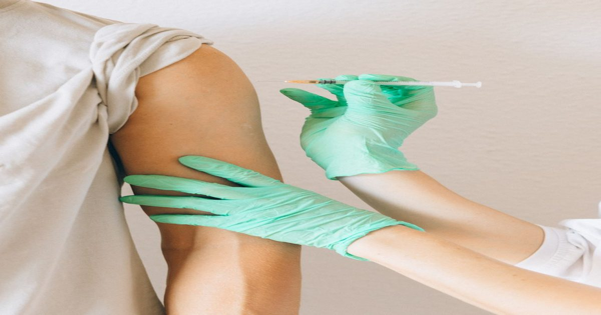

Un vaccin anticancer personnalisé montre, pour la première fois, un bénéfice chez des patients
Cette approche thérapeutique innovante a permis, après deux ans, de réduire de 42 % le risque de récidive ou de décès chez des patients atteints de mélanome à haut risque.
C’est ce qu’a montré un essai international incluant 1 137 patients, aux résultats divulgués jeudi soir.